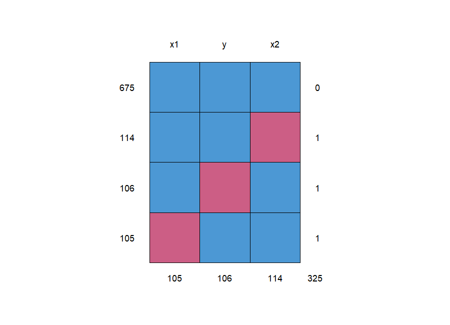
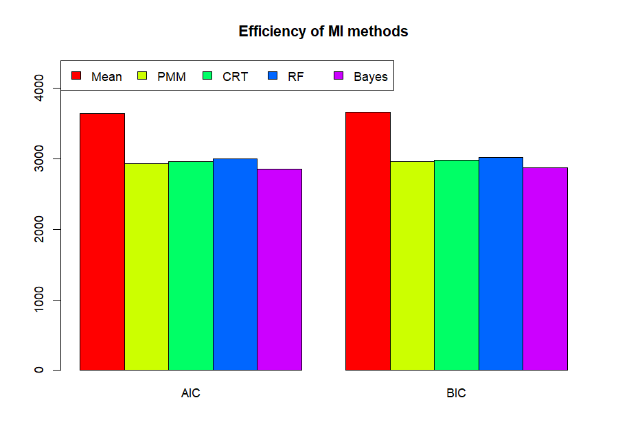

Why missing data is a problem
In Lecture 1 you met NA. A single NA makes mean() return NA. In regression the default is harsher: lm() silently deletes every row with any NA in the variables it uses. If missing values are scattered over different columns, you can lose a big chunk of your data even when each column is only a little incomplete.
rm(list = ls(all = TRUE)) # Remove all objects in R console
set.seed(09061982) # Set the seed for reproducible results
mydata = read.csv("dataset with missing.csv")
summary(mydata)
y x1 x2
Min. :-4.457 Min. :0.0000198 Min. :-3.06110
1st Qu.: 1.220 1st Qu.:0.2346959 1st Qu.:-0.76513
Median : 2.658 Median :0.4804115 Median :-0.07309
Mean : 2.738 Mean :0.4939114 Mean :-0.06467
3rd Qu.: 4.326 3rd Qu.:0.7426297 3rd Qu.: 0.59686
Max. :10.912 Max. :0.9997679 Max. : 3.61092
NAs :106 NAs :105 NAs :114rm(list = ls(all = TRUE))— clean workspace (Lecture 1, section 1.5).set.seed(09061982)— imputation methods use random numbers. Fixing the seed makes the "random" numbers the same every run, so you get the same results as the lecture. (The number is just a date; any number works.)- The dataset: response y and predictors x1 (between 0 and 1) and x2 (centred around 0). 1,000 rows;
summaryadds an NAs line: 106 + 105 + 114 = 325 missing cells, roughly 10.5% per column.
- MCAR (missing completely at random): the hole has nothing to do with any value — e.g. a lab sample was dropped. Deleting rows wastes data but doesn't bias results.
- MAR (missing at random): missingness depends on other observed variables — e.g. older people skip an online question more often. Imputation methods like
miceare designed for this case. - MNAR (missing not at random): it depends on the missing value itself — e.g. high earners hide their income. Hardest case; no method fully fixes it.
Seeing the pattern: md.pattern()
library("mice") #install.packages("mice")
md.pattern(mydata)
x1 y x2 675 1 1 1 0 114 1 1 0 1 106 1 0 1 1 105 0 1 1 1 105 106 114 325

No row is missing more than one value — but the missing values sit in different rows. 675 + 114 + 106 + 105 = 1,000. So only 675 rows (67.5%) are complete, although each column is about 89% complete.
Strategy 1 — complete-case analysis (just delete)
ols=lm(y ~.,data = mydata) summary(ols)
Coefficients:
Estimate Std. Error t value Pr(>|t|)
(Intercept) 1.90097 0.07356 25.84 <2e-16 ***
x1 1.97302 0.13709 14.39 <2e-16 ***
x2 2.00554 0.04049 49.53 <2e-16 ***
---
Residual standard error: 1.03 on 672 degrees of freedom
(325 observations deleted due to missingness)
Multiple R-squared: 0.795, Adjusted R-squared: 0.7944
F-statistic: 1303 on 2 and 672 DF, p-value: < 2.2e-16R tells you in one quiet line: 325 observations deleted. The model used 675 rows (df = 675 − 3 = 672). This is called listwise deletion or complete-case analysis.
Simple and honest
No made-up values. If data are MCAR, estimates are unbiased — here the slopes are ≈ 2 and 2, which look right.
Throws away information
A third of the rows are gone, including 650 perfectly good observed values in those rows. Smaller n → larger standard errors; if data are not MCAR, also bias.
We'll use the complete-case estimates (≈ 1.90, 1.97, 2.01) as a reference point for the methods below.
Strategy 2 — mean imputation
The simplest way to keep all rows: replace each NA by the mean of its column.
library("Hmisc") #install.packages("Hmisc")
new.y = impute(mydata$y, mean) # replace with mean
new.x1 = impute(mydata$x1, mean)
new.x2 =impute(mydata$x2, mean)
new.data = cbind.data.frame(new.y, new.x1, new.x2)
summary(new.data)
ols.1=lm(new.y ~.,data = new.data)
summary(ols.1)
106 values imputed to 2.738115
105 values imputed to 0.4939114
114 values imputed to -0.06467155
Coefficients:
Estimate Std. Error t value Pr(>|t|)
(Intercept) 2.08651 0.09654 21.612 <2e-16 ***
new.x1 1.53976 0.17044 9.034 <2e-16 ***
new.x2 1.68399 0.04861 34.639 <2e-16 ***
---
Residual standard error: 1.49 on 997 degrees of freedom
Multiple R-squared: 0.5636, Adjusted R-squared: 0.5627impute(x, mean)from the Hmisc package fills NAs with the mean and marks them (that's why some numbers in the residual summary print with a*).cbind.data.frame()glues the three filled columns into a new data frame.- Now all 1,000 rows are used (df = 997).
But look at the results: both slopes shrank (1.97 → 1.54, 2.01 → 1.68) and R² collapsed from 0.80 to 0.56. Using more data made the model worse!
Every filled value is the same "average" number with no relation to the other variables. A row with a high x2 but a missing y gets the average y — breaking the pattern "high x2 → high y". Hundreds of such rows sit flat on a horizontal line and drag the slope towards zero. It also fakes certainty: the filled column has an artificially small spread.
See it: every method on the real data
The widget below uses the actual completed datasets produced by the lecture's code (same seed). ● = rows that were complete, ● = rows where y or x2 was filled in.
Strategy 3 — multiple imputation with mice
mice = Multivariate Imputation by Chained Equations. Two big ideas:
Predict each missing value from the other variables
A missing y is filled using x1 and x2; a missing x2 using y and x1 — so filled values follow the data's patterns instead of sitting at the mean.
Do it m times, with randomness
We don't know the true value, so we create m plausible versions (here m = 10). Their differences reflect our uncertainty about the missing values.
library("mice") #install.packages("mice")
library ("randomForest") #install.packages("randomForest")
# 1- perform mice imputation, based on Predictive mean matching (PMM)
PMM <- mice(mydata, m = 10, method = "pmm" )
PMM_data <- complete(PMM) # generate the completed data.
anyNA(PMM_data)
PMM_data
iter imp variable
1 1 y x1 x2
1 2 y x1 x2
...
1 10 y x1 x2
2 1 y x1 x2
...
5 10 y x1 x2
[1] FALSE
y x1 x2
1 1.97840411 0.426283069 -1.050633208
2 2.06304773 0.406349297 0.227462558
3 6.62117807 0.486748088 1.157359430
... (1000 rows)m = 10: create 10 completed datasets.method = "pmm": the imputation model (next section).- The progress log
iter imp variable: for iteration 1–5 (defaultmaxit = 5) and imputation 1–10, it updated y, then x1, then x2. That's 5 × 10 = 50 lines. AddprintFlag = FALSEto hide it. complete(PMM)returns one completed dataset — by default the first of the 10. Row 3 had x1 missing; it is now 0.4867.anyNA(PMM_data)= "is there any NA left?" →FALSE. ✓
The four imputation methods in the script
#2- ... based on Classification and regression trees CRT_data <- complete(mice(mydata, m = 10, method = "cart" ) ) #3- ... based on Random forest RF_data <- complete(mice(mydata, m = 10, method = "rf" ) ) #4- ... based on Bayesian linear regression Bayes_data <- complete(mice(mydata, m = 10, method = "norm" ) )
Predictive Mean Matching
Fit a regression, predict the missing case, then find a few observed cases (donors) with the closest predictions and copy the real observed value of one of them at random. Imputed values are always real, plausible values. mice's default for numbers.
Classification & Regression Trees
Splits the data with yes/no questions ("x2 < 0.3?") into groups, and draws a value from the observed cases in the same final group (leaf). Handles non-linear patterns and interactions.
Random forest
Many trees on random subsets of the data; the missing value is drawn from donors pooled across trees. Flexible but can be noisier.
Bayesian linear regression
Fits a linear regression, draws the coefficients from their uncertainty (Bayesian), predicts, and adds random normal noise. Ideal when the true relationship is linear with normal errors — as here.
Recent versions of mice use the ranger package for method = "rf". If you see there is no package called 'ranger', run install.packages("ranger") once. (The script loads randomForest, which older mice versions used.)
Which method wins? AIC and BIC
PMM=lm(y~.,data = PMM_data) CRT=lm(y~.,data = CRT_data) RF=lm(y~.,data = RF_data) Bayes=lm(y~.,data = Bayes_data) AIC=AIC(ols.1, PMM,CRT,RF,Bayes) BIC=BIC(ols.1,PMM,CRT,RF,Bayes) select=as.matrix(cbind(AIC,BIC)[,-c(1,3)]) select
AIC BIC
ols.1 3639.807 3659.438
PMM 2936.996 2956.627
CRT 2966.026 2985.657
RF 3002.257 3021.888
Bayes 2857.530 2877.161AIC (Akaike) and BIC (Bayesian/Schwarz information criterion) score a model by how well it fits (likelihood L) with a penalty for the number of parameters k. Lower is better.
AIC(…)andBIC(…)with several models return a small table with columnsdfandAIC/BIC.cbindputs them side by side (df, AIC, df, BIC) and[,-c(1,3)]drops the two df columns (Lecture 1 negative indexing!).- Ranking (best → worst): Bayes (norm) 2857.5 → PMM 2937.0 → CART 2966.0 → RF 3002.3 → mean imputation 3639.8.

beside = T puts bars next to each other instead of stacking; rainbow(5) gives 5 colours; the legend lists Mean, PMM, CRT, RF, Bayes. Every MI method clearly beats mean imputation.Coefficients side by side
| Method | Intercept | x1 | x2 | R² | σ̂ | AIC |
|---|---|---|---|---|---|---|
| complete case (675 rows) | 1.901 | 1.973 | 2.006 | 0.795 | 1.030 | — |
| mean imputation | 2.087 | 1.540 | 1.684 | 0.564 | 1.490 | 3639.8 |
| PMM | 1.967 | 1.924 | 2.017 | 0.815 | 1.048 | 2937.0 |
| CART | 1.941 | 2.072 | 2.039 | 0.809 | 1.064 | 2966.0 |
| random forest | 1.928 | 1.927 | 1.992 | 0.799 | 1.083 | 3002.3 |
| Bayes (norm) | 1.944 | 2.020 | 2.051 | 0.827 | 1.007 | 2857.5 |
All four multiple-imputation methods give slopes close to the complete-case values (≈ 2), while mean imputation pulls them down to ≈ 1.5–1.7. (The data look like they were simulated from y = 2 + 2·x1 + 2·x2 + error, in the style of Abonazel's simulation paper, so "close to 2" is what a good method should give.) Note that AIC tracks σ̂: a lower residual spread gives a higher likelihood, so the method with the smallest σ̂ (Bayes) gets the lowest AIC.
Three things to keep in mind
The script makes 10 imputations but analyses only one. The proper multiple-imputation workflow fits the model on all m datasets and combines them with Rubin's rules (average the estimates; widen the standard errors by the between-imputation variation):
fit <- with(PMM, lm(y ~ x1 + x2)) # fit on each of the 10 datasets summary(pool(fit)) # combine with Rubin's rules
term estimate std.error statistic df p.value 1 (Intercept) 1.952080 0.07367765 26.49487 156.7995 8.824729e-60 2 x1 1.976975 0.13944514 14.17744 70.6954 2.352884e-22 3 x2 2.028780 0.03564732 56.91254 190.2761 1.983248e-121
AIC is designed to compare models fitted to the same data. Here each model is fitted to a differently imputed dataset, so lower AIC partly just means "this method imputed values that sit closer to a straight line". It's a useful heuristic used in the lecture's reference paper, but not a formal test.
With another seed the numbers shift a little (especially between PMM, CART and RF). The big picture — MI ≫ mean imputation — is stable.
Check yourself
Lecture 4 quiz
lm() use out of 1,000?114 1 1 0 1 mean?complete(PMM) after mice(…, m = 10) returns…action = 1. Use with() + pool() to analyse all 10.set.seed(09061982)?Summary
summary()shows NAs per column;md.pattern()shows which combinations are missing.lm()does listwise deletion: here 325 of 1,000 rows lost. Simple, unbiased under MCAR, but wasteful.- Mean imputation keeps all rows but flattens relationships: slopes shrink (2 → 1.5–1.7), R² drops (0.80 → 0.56). Avoid it.
- mice imputes each variable from the others, m times, iterating (chained equations). Methods:
pmm,cart,rf(needs ranger),norm(Bayesian). - AIC/BIC (lower = better): Bayes < PMM < CART < RF ≪ mean.
- Proper MI analysis:
with(imp, lm(...))thenpool()(Rubin's rules) instead of analysing onecomplete()dataset.